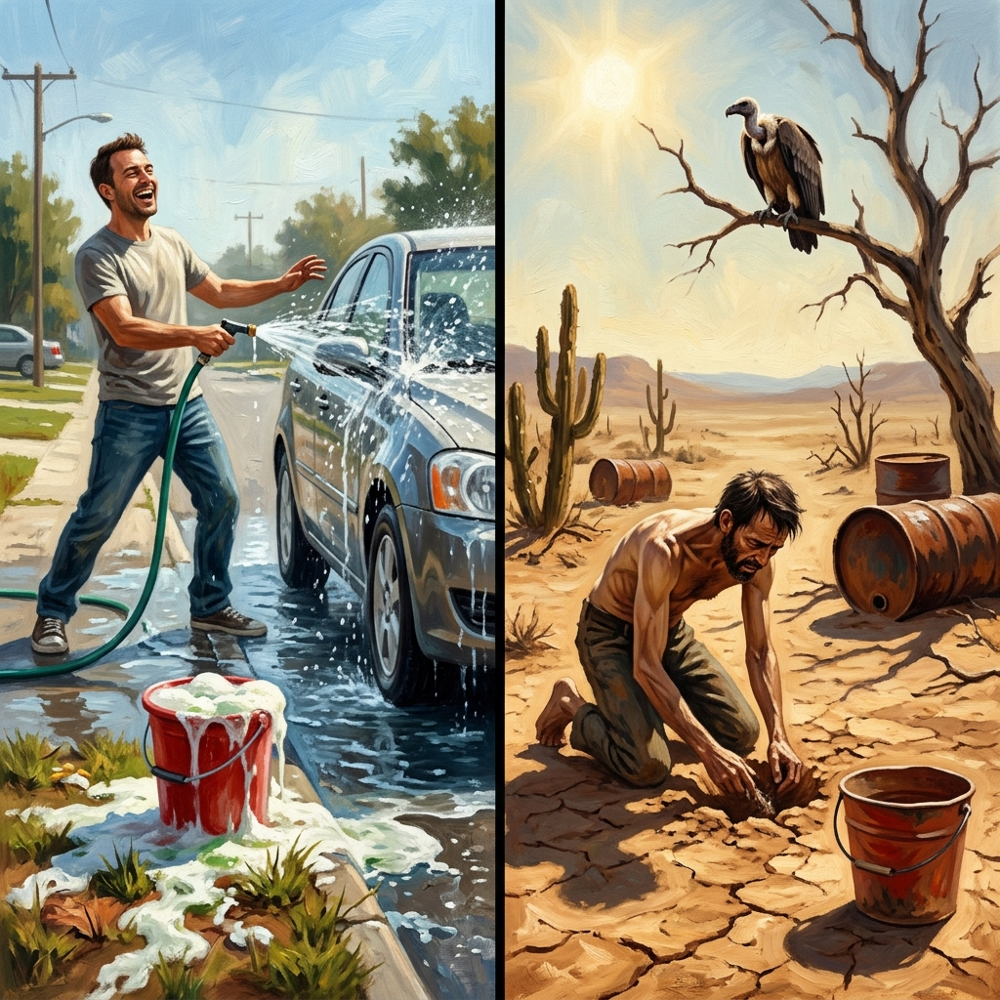
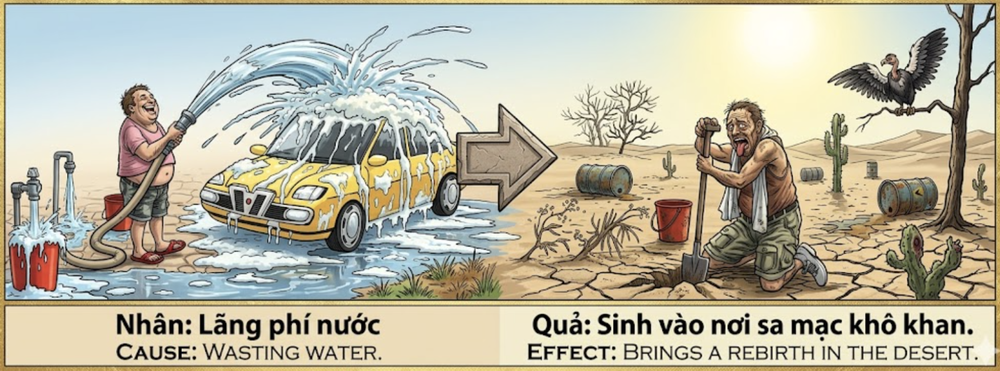

La Sed del Alma PródigaThe Thirst of the Prodigal SoulLa Sete dell'Anima Prodiga挥霍灵魂的干渴عطش الروح المبذّرةЖажда расточительной душиDer Durst der verschwenderischen SeeleLa Soif de l'Âme Prodigue浪費する魂の渇きA Sede da Alma PródigaCơn Khát Của Linh Hồn Phung Phí
Quien derrocha el agua sin conciencia firma con su karma un contrato de sed; en su próxima vida, la tierra que pise no conocerá el rocío ni la lluvia. He who wastes water without conscience signs a contract of thirst with his karma; in his next life, the land beneath his feet will know neither dew nor rain. Chi spreca l'acqua senza coscienza firma col suo karma un contratto di sete; nella prossima vita, la terra che calpesterà non conoscerà rugiada né pioggia. 无意识地浪费水源的人，用他的业力签署了一份干渴的契约；在他的来世，他脚下的土地将既无露珠也无雨水。 من يبذّر الماء بلا وعي يوقّع مع كارماه عقد عطش؛ في حياته القادمة لن تعرف الأرض تحت قدميه ندى ولا مطراً. Тот, кто безрассудно расточает воду, подписывает со своей кармой договор жажды; в следующей жизни земля под его ногами не узнает ни росы, ни дождя. Wer Wasser ohne Bewusstsein verschwendet, unterzeichnet mit seinem Karma einen Vertrag des Durstes; in seinem nächsten Leben wird die Erde unter seinen Füßen weder Tau noch Regen kennen. Celui qui gaspille l'eau sans conscience signe avec son karma un contrat de soif ; dans sa prochaine vie, la terre qu'il foulera ne connaîtra ni rosée ni pluie. 意識なく水を浪費する者は、業との間に渇きの契約を結びます。来世において、その者の踏む大地は露も雨も知ることがないでしょう。 Quem desperdiça a água sem consciência assina com o seu karma um contrato de sede; na sua próxima vida, a terra que pisar não conhecerá orvalho nem chuva. Kẻ phung phí nước mà không hề hay biết đang ký với nghiệp của mình một bản giao kèo khát cháy; ở kiếp sau, mảnh đất dưới chân họ sẽ chẳng bao giờ được biết đến hơi sương hay cơn mưa.
El agua es, en todas las tradiciones espirituales del mundo, el símbolo supremo de la vida misma. Los ríos son las venas de la Tierra; los océanos, su corazón palpitante; y cada gota de lluvia, una bendición que el cielo envía sin factura. Desperdiciarla —con la manguera a chorro, con la espuma tóxica que envenena los arroyos, con la indiferencia del que cree que el grifo nunca se secará— es cometer una ofensa directa contra el orden sagrado de la naturaleza. El karma registra esta arrogancia con la precisión de un contable cósmico.
La consecuencia kármica es tan simétrica como brutal: quien malgasta el agua en esta vida renace en parajes donde el agua no existe. Desiertos de roca agrietada, tierras baldías dominadas por el sol implacable, donde hasta los buitres esperan con paciencia y los cactus guardan sus gotas con egoísmo ancestral. El mismo cubo rojo que en esta vida desbordaba de espuma inútil aparecerá en la siguiente: vacío, calcinado, como testimonio mudo del desperdicio anterior. El karma no inventa castigos nuevos: simplemente le devuelve a cada alma la carencia exacta de aquello que despreció.
Water is, in every spiritual tradition of the world, the supreme symbol of life itself. Rivers are the veins of the Earth; oceans, its beating heart; and every raindrop, a blessing the sky sends without charge. To waste it—with the full-blast hose, with the toxic foam that poisons the streams, with the indifference of one who believes the tap will never run dry—is to commit a direct offense against the sacred order of nature. Karma records this arrogance with the precision of a cosmic accountant.
The karmic consequence is as symmetrical as it is brutal: he who wastes water in this life is reborn in places where water does not exist. Deserts of cracked rock, wastelands ruled by a relentless sun, where even vultures wait patiently and cactuses guard their drops with ancestral selfishness. The same red bucket that overflowed with useless foam in this life will appear in the next: empty, sun-bleached, a mute testimony to the waste that preceded it. Karma does not invent new punishments: it simply returns to each soul the precise scarcity of that which it despised.
L'acqua è, in ogni tradizione spirituale del mondo, il simbolo supremo della vita stessa. I fiumi sono le vene della Terra; gli oceani, il suo cuore pulsante; e ogni goccia di pioggia, una benedizione che il cielo invia senza fattura. Sprecarla — con il getto a tutta potenza, con la schiuma tossica che avvelena i torrenti, con l'indifferenza di chi crede che il rubinetto non si esaurirà mai — è commettere un'offesa diretta contro l'ordine sacro della natura.
La conseguenza karmica è tanto simmetrica quanto brutale: chi spreca l'acqua in questa vita rinasce in luoghi dove l'acqua non esiste. Deserti di roccia screpolata, terre desolate dominate da un sole implacabile, dove persino gli avvoltoi aspettano pazienti e i cactus custodiscono le loro gocce con egoismo ancestrale. Lo stesso secchio rosso che in questa vita traboccava di schiuma inutile apparirà nella prossima: vuoto, calcinato, testimone muto dello spreco precedente.
在世界每一种精神传统中，水都是生命本身的最高象征。河流是大地的血管；海洋是它跳动的心脏；每一滴雨水都是上天无偿送出的祝福。浪费它——用全力喷射的水管、用毒害溪流的有毒泡沫、用认为水龙头永远不会干涸的冷漠——就是在对自然的神圣秩序犯下直接的冒犯。业力以宇宙会计师的精准记录下这份傲慢。
业力的后果既对称又残酷：今世浪费水的人，来世将重生在水不存在的地方。龟裂的岩石沙漠，被无情烈日统治的荒原，连秃鹫都耐心等待，仙人掌以古老的吝啬守护着自己的水滴。今世溢满无用泡沫的那个红色水桶，将在来世再次出现：空空如也，被太阳漂白，成为前世挥霍的无声见证。业力不发明新的惩罚：它只是精确地归还给每个灵魂它所蔑视之物的匮乏。
الماء في كل التقاليد الروحية في العالم هو الرمز الأسمى للحياة ذاتها. الأنهار عروق الأرض؛ والمحيطات قلبها النابض؛ وكل قطرة مطر نعمة يرسلها السماء دون فاتورة. تبذيره — بالخرطوم المفتوح على آخره، بالرغوة السامة التي تسمم الجداول، بلامبالاة من يظن أن الصنبور لن ينضب أبداً — هو اعتداء مباشر على النظام المقدس للطبيعة.
العاقبة الكارمية متماثلة وقاسية: من يبدد الماء في هذه الحياة يولد من جديد في أماكن لا يوجد فيها ماء. صحارى من صخور متشققة، أراضٍ قاحلة يحكمها شمس لا ترحم، حيث حتى النسور تنتظر بصبر والصبار يحرس قطراته ببخل موروث. الدلو الأحمر ذاته الذي فاض بالرغوة في هذه الحياة سيظهر في التالية: فارغاً، محترقاً بالشمس، شاهداً صامتاً على الإسراف السابق.
Вода — во всех духовных традициях мира — высший символ самой жизни. Реки — вены Земли; океаны — её бьющееся сердце; каждая капля дождя — благословение, которое небо посылает бесплатно. Расточать её — шлангом на полную мощность, токсичной пеной, отравляющей ручьи, равнодушием того, кто верит, что кран никогда не иссякнет — значит совершать прямое оскорбление священного порядка природы.
Кармическое последствие столь же симметрично, сколь и жестоко: расточающий воду в этой жизни рождается там, где воды не существует. Пустыни из потрескавшегося камня, пустоши под беспощадным солнцем, где даже стервятники терпеливо ждут, а кактусы берегут свои капли с вековой скупостью. То самое красное ведро, которое в этой жизни переливалось бесполезной пеной, появится в следующей: пустое, выжженное солнцем — немой свидетель прежнего расточительства.
Wasser ist in jeder spirituellen Tradition der Welt das höchste Symbol des Lebens selbst. Flüsse sind die Adern der Erde; Ozeane ihr schlagendes Herz; und jeder Regentropfen ein Segen, den der Himmel kostenlos sendet. Es zu verschwenden — mit dem Schlauch auf voller Kraft, mit dem giftigen Schaum, der die Bäche vergiftet, mit der Gleichgültigkeit dessen, der glaubt, der Wasserhahn wird nie versiegen — ist ein direktes Vergehen gegen die heilige Ordnung der Natur.
Die karmische Konsequenz ist ebenso symmetrisch wie brutal: Wer in diesem Leben Wasser verschwendet, wird an Orten wiedergeboren, an denen kein Wasser existiert. Wüsten aus rissigem Gestein, Ödland unter erbarmungsloser Sonne, wo selbst Geier geduldig warten und Kakteen ihre Tropfen mit urahnlichem Geiz bewachen. Derselbe rote Eimer, der in diesem Leben vor nutzlosem Schaum überquoll, wird im nächsten erscheinen: leer, sonnengebleicht, ein stummes Zeugnis der vergangenen Verschwendung.
L'eau est, dans chaque tradition spirituelle du monde, le symbole suprême de la vie elle-même. Les rivières sont les veines de la Terre ; les océans, son cœur battant ; et chaque goutte de pluie, une bénédiction que le ciel envoie sans facture. La gaspiller — au jet de tuyau à plein régime, avec la mousse toxique qui empoisonne les ruisseaux, avec l'indifférence de celui qui croit que le robinet ne se tarira jamais — c'est commettre une offense directe contre l'ordre sacré de la nature.
La conséquence karmique est aussi symétrique que brutale : celui qui gaspille l'eau dans cette vie renaît dans des endroits où l'eau n'existe pas. Des déserts de roche fissurée, des terres désolées sous un soleil implacable, où même les vautours attendent patiemment et les cactus gardent leurs gouttes avec un égoïsme ancestral. Le même seau rouge qui débordait de mousse inutile dans cette vie apparaîtra dans la suivante : vide, blanchi par le soleil, témoin muet du gaspillage antérieur.
水は、世界のあらゆる精神的伝統において、命そのものの最高の象徴です。川は大地の血管であり、海はその鼓動する心臓であり、すべての雨粒は天が無償で送る祝福です。それを浪費すること——全開のホースで、小川を毒する有害な泡で、蛇口は決して枯れないと信じる無関心さで——は、自然の神聖な秩序に対する直接的な冒涜です。
カルマの帰結は、対称的であると同時に残酷です。今世で水を浪費した者は、水の存在しない場所に生まれ変わります。ひび割れた岩の砂漠、容赦ない太陽に支配された荒野、ハゲワシさえ辛抱強く待ち、サボテンが太古の吝嗇で水滴を守る場所。今世で無駄な泡を溢れさせていたあの赤いバケツは、来世にも現れます——空っぽで、日に焼けて白くなり、前世の浪費を無言で証言するものとして。
A água é, em todas as tradições espirituais do mundo, o símbolo supremo da própria vida. Os rios são as veias da Terra; os oceanos, o seu coração palpitante; e cada gota de chuva, uma bênção que o céu envia sem factura. Desperdiçá-la — com a mangueira a jacto, com a espuma tóxica que envenena os riachos, com a indiferença de quem crê que a torneira nunca secará — é cometer uma ofensa directa contra a ordem sagrada da natureza.
A consequência kármica é tão simétrica quanto brutal: quem esbanja água nesta vida renasce em paragens onde a água não existe. Desertos de rocha gretada, terras incultas dominadas por um sol implacável, onde até os abutres esperam pacientemente e os cactos guardam as suas gotas com avareza ancestral. O mesmo balde vermelho que nesta vida transbordava de espuma inútil aparecerá na seguinte: vazio, calcinado, como testemunho mudo do desperdício anterior.
Nước, trong mọi truyền thống tâm linh trên thế giới, là biểu tượng tối thượng của sự sống. Sông là huyết mạch của Đất Mẹ; đại dương là trái tim đập rộn ràng của Bà; và mỗi giọt mưa là một phước lành trời ban không tính phí. Phung phí nó — bằng vòi nước xả hết cỡ, bằng bọt xà phòng độc hại đầu độc suối khe, bằng sự thờ ơ của kẻ tin rằng vòi nước sẽ chẳng bao giờ cạn — là phạm vào trật tự thiêng liêng của tự nhiên.
Hậu quả nhân quả vừa đối xứng vừa tàn khốc: kẻ phí phạm nước ở kiếp này sẽ tái sinh nơi nước không tồn tại. Những sa mạc đá nứt nẻ, những vùng hoang vu dưới mặt trời thiêu đốt, nơi đến kên kên cũng kiên nhẫn chờ đợi và xương rồng giữ từng giọt nước bằng sự keo kiệt ngàn đời. Chính chiếc xô đỏ trong kiếp này từng tràn đầy bọt xà phòng vô ích sẽ xuất hiện ở kiếp sau: trống rỗng, bạc phếch dưới nắng, như chứng nhân câm lặng cho sự hoang phí của tiền kiếp.
El Cubo Rojo
The Red Bucket
Il Secchio Rosso
红色水桶
الدلو الأحمر
Красное ведро
Der rote Eimer
Le Seau Rouge
赤いバケツ
O Balde Vermelho
Chiếc Xô Đỏ
En un barrio acomodado de una ciudad moderna vivía un hombre llamado Marcos. Cada domingo, Marcos sacaba su manguera, su cubo rojo rebosante de jabón químico y su risa estridente, y lavaba su coche durante horas. El agua corría calle abajo como un río de espuma tóxica, matando el césped de los vecinos, envenenando las raíces de los árboles. "¡Es solo agua!", gritaba entre carcajadas cuando alguien se quejaba. "Sobra de sobra. Para eso pago."
Al otro lado de la calle vivía una anciana ciega llamada Doña Luz, que recogía el agua de lluvia en frascos para regar sus geranios. Un día le pidió a Marcos: "Hijo, ¿podrías darme un cubo de agua limpia? El agua de lluvia no ha llegado este mes." Marcos se rio: "Compre la suya, señora", y siguió vaciando cientos de litros sobre el asfalto caliente. Doña Luz murió aquel verano sin ver florecer sus geranios por última vez.
Años después, Marcos también cerró los ojos. Cuando volvió a abrirlos, no reconoció nada. La tierra a su alrededor estaba agrietada como la piel de un reptil moribundo. Un sol inmisericorde clavaba sus rayos sobre una planicie sin sombras. Un buitre lo observaba desde un árbol seco. Y a su lado, volcado sobre la tierra calcinada, yacía un cubo rojo —el mismo cubo rojo—, vacío como una promesa rota. Marcos cavó con las manos desnudas durante días, pero de la tierra solo brotaba polvo. Entonces recordó —con la claridad de un relámpago en aquel cielo sin nubes— las palabras de Doña Luz, y comprendió que cada gota que había tirado por el desagüe en la vida anterior era exactamente la gota que ahora le faltaba para sobrevivir.
In a well-off neighborhood of a modern city lived a man named Marcus. Every Sunday, Marcus would bring out his hose, his red bucket overflowing with chemical soap, and his raucous laughter, and wash his car for hours. The water ran down the street like a river of toxic foam, killing the neighbors' lawns and poisoning the roots of the trees. "It's just water!" he would shout between laughs whenever someone complained. "There's plenty. That's what I pay for."
Across the street lived a blind old woman named Doña Luz, who collected rainwater in jars to water her geraniums. One day she asked Marcus: "Son, could you spare me a bucket of clean water? The rain hasn't come this month." Marcus laughed: "Buy your own, lady," and kept emptying hundreds of liters onto the hot pavement. Doña Luz died that summer without seeing her geraniums bloom one last time.
Years later, Marcus also closed his eyes. When he opened them again, he recognized nothing. The earth around him was cracked like the skin of a dying reptile. A merciless sun drove its rays over a shadowless plain. A vulture watched him from a dead tree. And beside him, overturned on the scorched earth, lay a red bucket—the same red bucket—empty as a broken promise. Marcus dug with his bare hands for days, but only dust rose from the ground. Then he remembered—with the clarity of a lightning bolt in that cloudless sky—Doña Luz's words, and understood that every drop he had poured down the drain in his previous life was precisely the drop he now lacked to survive.
In un quartiere benestante di una città moderna viveva un uomo di nome Marco. Ogni domenica, Marco tirava fuori il tubo, il suo secchio rosso traboccante di sapone chimico e la sua risata fragorosa, e lavava l'auto per ore. L'acqua scorreva giù per la strada come un fiume di schiuma tossica, uccidendo il prato dei vicini e avvelenando le radici degli alberi.
Dall'altra parte della strada viveva una vecchia cieca di nome Doña Luz, che raccoglieva acqua piovana in barattoli per innaffiare i suoi gerani. Un giorno chiese a Marco: "Figlio, potresti darmi un secchio d'acqua pulita?" Marco rise: "Compri la sua, signora," e continuò a svuotare centinaia di litri sull'asfalto rovente.
Anni dopo, Marco chiuse gli occhi per l'ultima volta. Quando li riaprì, non riconobbe nulla. La terra era crepata come la pelle di un rettile morente. Un sole spietato bruciava una pianura senz'ombra. Un avvoltoio lo osservava da un albero secco. E accanto a lui, rovesciato sulla terra calcinata, giaceva un secchio rosso — lo stesso secchio rosso — vuoto come una promessa infranta. Allora ricordò le parole di Doña Luz, e comprese che ogni goccia gettata nello scarico era esattamente la goccia che ora gli mancava per sopravvivere.
在一座现代城市的富裕社区里，住着一个名叫马科斯的男人。每个周日，马科斯都会拿出他的水管、那个溢满化学肥皂的红色水桶和他刺耳的笑声，花好几个小时洗他的车。水像一条有毒泡沫河流一样沿街而下，杀死了邻居的草坪，毒害了树根。"不过是水而已！"每当有人抱怨时，他就在笑声中大喊。
街对面住着一位名叫"光阿婆"的盲老妇人，她用瓶子收集雨水来浇灌天竺葵。有一天她请求马科斯："儿子，你能给我一桶干净的水吗？这个月还没有下雨呢。"马科斯笑了："自己去买吧，老太太。"然后继续把数百升水倒在滚烫的沥青上。光阿婆在那年夏天去世了，没能最后一次看到她的天竺葵绽放。
多年后，马科斯也合上了双眼。当他再次睁开眼睛时，他什么都不认得了。周围的大地像垂死爬行动物的皮肤一样龟裂。无情的太阳将光芒刺向一片没有阴影的平原。一只秃鹫从枯树上注视着他。而在他身旁，翻倒在焦土上的，正是那个红色水桶——同一个红色水桶——像破碎的承诺一样空空如也。他用赤裸的双手挖掘了数日，但土地只涌出尘土。然后他记起了——如同在那无云天空中的一道闪电——光阿婆的话，并理解了他前世倒进下水道的每一滴水，正是他现在活下去所缺少的那一滴。
في حيٍّ ميسور في مدينة حديثة، عاش رجل يُدعى ماركوس. كلّ أحد، كان يُخرج خرطوم المياه ودلوه الأحمر الفائض بالصابون الكيميائي وضحكته الصاخبة، ويغسل سيارته لساعات. كان الماء يجري في الشارع كنهر من الرغوة السامة، يقتل العشب ويسمم جذور الأشجار.
على الجانب الآخر كانت تعيش عجوز كفيفة تُدعى دونيا لوث، تجمع مياه المطر في جرار لتسقي أزهارها. يوماً ما طلبت من ماركوس: 'يا بني، هل يمكنك أن تعطيني دلواً من الماء النظيف؟' ضحك ماركوس: 'اشتري ماءك بنفسك يا سيدتي.' ماتت دونيا لوث في ذلك الصيف.
بعد سنوات، أغلق ماركوس عينيه هو أيضاً. حين فتحهما ثانية لم يعرف شيئاً. الأرض متشققة كجلد زاحف يحتضر. شمس بلا رحمة. نسر يراقبه من شجرة ميتة. وبجانبه، مقلوباً على التراب المحترق، الدلو الأحمر ذاته — فارغاً كوعد مكسور. حفر بيديه أياماً فلم يخرج من الأرض سوى الغبار. حينئذ تذكّر — كبرق في سماء بلا غيوم — كلمات دونيا لوث، وأدرك أنّ كل قطرة أهدرها في حياته السابقة كانت بالضبط القطرة التي ينقصه الآن للبقاء.
В благополучном районе современного города жил человек по имени Маркос. Каждое воскресенье он доставал свой шланг, своё красное ведро, переполненное химическим мылом, и свой оглушительный смех — и мыл машину часами. Вода текла по улице рекой токсичной пены, убивая газоны соседей и отравляя корни деревьев.
Через дорогу жила слепая старушка — Донья Лус, собиравшая дождевую воду в банки, чтобы поливать свои герани. Однажды она попросила Маркоса: «Сынок, не дашь ли ведро чистой воды?» Маркос рассмеялся: «Купите свою, бабуля.» Донья Лус умерла тем летом, так и не увидев последнего цветения своих гераней.
Спустя годы Маркос тоже закрыл глаза. Когда он вновь их открыл, он ничего не узнал. Земля вокруг него потрескалась, как кожа умирающей рептилии. Безжалостное солнце вбивало лучи в равнину без единой тени. Стервятник наблюдал с мёртвого дерева. А рядом, опрокинутое на выжженную землю, лежало красное ведро — то самое красное ведро — пустое, как нарушенное обещание. Он копал голыми руками дни напролёт, но из земли поднималась лишь пыль. И тогда он вспомнил — с ясностью молнии в том безоблачном небе — слова Доньи Лус и понял: каждая капля, которую он слил в водосток в прошлой жизни, была именно той каплей, которой ему теперь не хватало, чтобы выжить.
In einem wohlhabenden Viertel einer modernen Stadt lebte ein Mann namens Markus. Jeden Sonntag holte er seinen Schlauch, seinen roten Eimer voller chemischer Seife und sein dröhnendes Lachen hervor und wusch stundenlang sein Auto. Das Wasser rann die Straße hinunter wie ein Fluss aus giftiger Gischt, tötete den Rasen der Nachbarn und vergiftete die Wurzeln der Bäume.
Auf der anderen Straßenseite lebte eine blinde alte Frau namens Doña Luz, die Regenwasser in Gläsern sammelte, um ihre Geranien zu gießen. Eines Tages bat sie Markus: „Mein Sohn, könntest du mir einen Eimer sauberes Wasser geben?" Markus lachte: „Kaufen Sie Ihr eigenes, meine Dame." Doña Luz starb in jenem Sommer.
Jahre später schloss auch Markus die Augen. Als er sie wieder öffnete, erkannte er nichts wieder. Die Erde war rissig wie die Haut eines sterbenden Reptils. Eine erbarmungslose Sonne trieb ihre Strahlen über eine schattenlose Ebene. Ein Geier beobachtete ihn von einem toten Baum. Und neben ihm, umgestürzt auf der verbrannten Erde, lag ein roter Eimer — derselbe rote Eimer — leer wie ein gebrochenes Versprechen. Er grub tagelang mit bloßen Händen, doch aus der Erde stieg nur Staub. Dann erinnerte er sich — mit der Klarheit eines Blitzes an jenem wolkenlosen Himmel — an Doña Luz' Worte und verstand, dass jeder Tropfen, den er im vorigen Leben in den Abfluss gegossen hatte, genau der Tropfen war, der ihm jetzt zum Überleben fehlte.
Dans un quartier aisé d'une ville moderne vivait un homme nommé Marcus. Chaque dimanche, il sortait son tuyau d'arrosage, son seau rouge débordant de savon chimique et son rire tonitruant, et lavait sa voiture pendant des heures. L'eau coulait dans la rue comme un fleuve de mousse toxique, tuant les pelouses des voisins et empoisonnant les racines des arbres.
De l'autre côté de la rue vivait une vieille femme aveugle, Doña Luz, qui recueillait l'eau de pluie dans des bocaux pour arroser ses géraniums. Un jour elle demanda à Marcus : « Mon fils, pourrais-tu me donner un seau d'eau propre ? » Marcus rit : « Achetez la vôtre, madame. » Doña Luz mourut cet été-là.
Des années plus tard, Marcus ferma lui aussi les yeux. Quand il les rouvrit, il ne reconnut rien. La terre était craquelée comme la peau d'un reptile mourant. Un soleil sans pitié dardait ses rayons sur une plaine sans ombre. Un vautour l'observait d'un arbre mort. Et à côté de lui, renversé sur la terre calcinée, gisait un seau rouge — le même seau rouge — vide comme une promesse brisée. Il creusa des jours durant à mains nues, mais de la terre ne montait que la poussière. Alors il se souvint — avec la clarté d'un éclair dans ce ciel sans nuages — des paroles de Doña Luz, et comprit que chaque goutte qu'il avait déversée dans l'égout dans sa vie antérieure était exactement la goutte qui lui manquait maintenant pour survivre.
ある現代都市の裕福な住宅街に、マルコスという男が住んでいました。毎週日曜日、マルコスはホースを引き出し、化学洗剤で溢れた赤いバケツと大きな笑い声とともに、何時間もかけて車を洗いました。水は有毒な泡の川のように通りを流れ落ち、隣人の芝生を枯らし、木々の根を蝕んでいきました。
通りの反対側には、ドニャ・ルスという盲目の老婆が住んでいました。彼女は瓶に雨水を集めてゼラニウムに水やりをしていました。ある日、彼女はマルコスに頼みました。「息子よ、きれいな水をバケツ一杯くれませんか？」マルコスは笑いました。「自分で買いなさいよ、ばあさん」。ドニャ・ルスはその夏、最後のゼラニウムの花を見ることなく亡くなりました。
数年後、マルコスも目を閉じました。再び開いたとき、見覚えのあるものは何もありませんでした。周囲の大地は死にゆく爬虫類の皮膚のようにひび割れていました。容赦のない太陽が影のない平原に照りつけていました。枯れ木からハゲワシが彼を見つめていました。そして傍らの焦げた大地の上に、ひっくり返って横たわっていたのは赤いバケツ——あの同じ赤いバケツ——破られた約束のように空っぽでした。マルコスは素手で何日も掘りましたが、大地からは塵しか出てきませんでした。そのとき彼は思い出したのです——あの雲ひとつない空に走る稲妻のような鮮明さで——ドニャ・ルスの言葉を。そして理解しました。前世で排水溝に流した一滴一滴が、今まさに生き延びるために足りない、その一滴だったのだと。
Num bairro abastado de uma cidade moderna vivia um homem chamado Marcos. Todos os domingos, Marcos tirava a mangueira, o seu balde vermelho a transbordar de sabão químico e a sua gargalhada estridente, e lavava o carro durante horas. A água corria rua abaixo como um rio de espuma tóxica, matando a relva dos vizinhos e envenenando as raízes das árvores.
Do outro lado da rua vivia uma velha cega chamada Dona Luz, que recolhia água da chuva em frascos para regar os seus gerânios. Um dia pediu a Marcos: «Filho, podes dar-me um balde de água limpa?» Marcos riu-se: «Compre a sua, senhora.» Dona Luz morreu naquele verão.
Anos depois, Marcos também fechou os olhos. Quando voltou a abri-los, não reconheceu nada. A terra estava gretada como a pele de um réptil moribundo. Um sol impiedoso cravava os seus raios numa planície sem sombras. Um abutre observava-o de uma árvore morta. E ao seu lado, tombado sobre a terra calcinada, jazia um balde vermelho — o mesmo balde vermelho — vazio como uma promessa quebrada. Marcos cavou com as mãos nuas durante dias, mas da terra só brotava pó. Então lembrou-se — com a clareza de um relâmpago naquele céu sem nuvens — das palavras de Dona Luz, e compreendeu que cada gota que deitara pelo ralo na vida anterior era exactamente a gota que agora lhe faltava para sobreviver.
Tại một khu phố giàu có của thành phố hiện đại, có một người đàn ông tên Marcus. Mỗi Chủ nhật, ông ta lôi ra ống nước, chiếc xô đỏ tràn ngập xà phòng hóa chất và tiếng cười oang oang, rồi rửa xe hàng giờ đồng hồ. Nước chảy tràn xuống đường như một dòng sông bọt độc hại, giết chết bãi cỏ hàng xóm, đầu độc rễ cây. "Chỉ là nước thôi mà!" ông ta hét lên giữa những tràng cười mỗi khi ai đó phàn nàn.
Bên kia đường sống Bà Luz mù lòa, ngày ngày gom từng giọt nước mưa vào lọ thủy tinh để tưới mấy chậu phong lữ thảo. Một hôm bà cầu xin Marcus: "Con trai ơi, cho bà xin một xô nước sạch được không? Tháng này trời chẳng mưa." Marcus cười phá lên: "Tự mua lấy đi bà ơi!" rồi tiếp tục xả hàng trăm lít nước xuống mặt đường nóng bỏng. Bà Luz qua đời mùa hè năm đó mà không kịp nhìn thấy những bông hoa phong lữ thảo nở lần cuối.
Nhiều năm sau, Marcus cũng nhắm mắt xuôi tay. Khi mở mắt ra lần nữa, ông ta không nhận ra gì cả. Đất quanh mình nứt nẻ như da một con bò sát hấp hối. Mặt trời thiêu đốt không thương tiếc trên cánh đồng hoang không một bóng râm. Một con kên kên đậu trên cành cây khô trốc lõi nhìn ông ta chằm chằm. Và bên cạnh, lật úp trên nền đất cháy xém, là chiếc xô đỏ — chính chiếc xô đỏ ấy — rỗng tuếch như một lời hứa bị phản bội. Marcus bới đất bằng tay trần suốt nhiều ngày, nhưng lòng đất chỉ trào lên bụi khô. Rồi ông ta nhớ ra — rõ ràng như một tia chớp xé ngang bầu trời không mây — những lời của Bà Luz, và hiểu rằng mỗi giọt nước ông ta đổ xuống cống rãnh ở kiếp trước chính xác là giọt nước ông ta đang thiếu để sinh tồn ở kiếp này.

La Inspiración Original
The Original Inspiration
Nguồn cảm hứng ban đầu
La historia que hemos relatado en este capítulo está inspirada por el pasaje de la escena original de los murales «Tranh Nhân Quả» (Ilustraciones del Karma) del Templo Linh Ung en Da Nang, capturado en la imagen.
The story we have told in this chapter is inspired by the passage from the original scene of the "Tranh Nhân Quả" (Illustrations of Karma) murals of the Linh Ung Temple in Da Nang, captured in the image.
Câu chuyện chúng tôi kể trong chương này được lấy cảm hứng từ đoạn trích từ cảnh gốc của bức tranh tường "Tranh Nhân Quả" ở chùa Linh Ứng ở Đà Nẵng, được ghi lại trong hình ảnh.

Como se puede apreciar en el pasaje extraído del mural, la causa y su efecto kármico están descritos originalmente en vietnamita y con una breve traducción al inglés. A continuación, su traducción en los distintos idiomas:
As can be seen in the passage taken from the mural, the cause and its karmic effect are originally described in Vietnamese and with a brief translation into English. Below, its translation in the different languages:
🇻🇳 Tiếng Việt:
Nhân: Lãng phí nước.
Quả: Sinh vào nơi sa mạc khô khan.
🇬🇧 English:
Cause: Wasting water.
Effect: Brings a rebirth in the desert.
Traducción Recreada:
Causa: Malgastar el agua sin conciencia ni respeto.
Efecto: Renacer en un desierto árido y seco, donde el agua no existe.
Recreated Translation:
Cause: Wasting water without conscience or respect.
Effect: Rebirth in an arid and dry desert, where water does not exist.
Traduzione ricreata:
Causa: Sprecare l'acqua senza coscienza né rispetto.
Effetto: Rinascita in un deserto arido e secco, dove l'acqua non esiste.
重新创建的翻译:
原因：无意识、无敬畏地浪费水资源。
影响：重生在干旱荒芜的沙漠中，那里不存在水。
الترجمة المعاد صياغتها:
السبب: تبذير الماء بلا وعي ولا احترام.
الأثر: إعادة الولادة في صحراء قاحلة وجافة حيث لا يوجد ماء.
Воссозданный перевод:
Причина: Расточительство воды без совести и уважения.
Следствие: Перерождение в засушливой и сухой пустыне, где воды не существует.
Neu erstellte Übersetzung:
Ursache: Wasser ohne Gewissen und Respekt verschwenden.
Wirkung: Wiedergeburt in einer dürren und trockenen Wüste, wo kein Wasser existiert.
Traduction recréée:
Cause : Gaspiller l'eau sans conscience ni respect.
Effet : Renaissance dans un désert aride et sec, où l'eau n'existe pas.
再作成された翻訳:
原因：良心も敬意もなく水を浪費すること。
影響：水の存在しない乾燥した荒涼たる砂漠に生まれ変わります。
Tradução recriada:
Causa: Desperdiçar a água sem consciência nem respeito.
Efeito: Renascimento num deserto árido e seco, onde a água não existe.